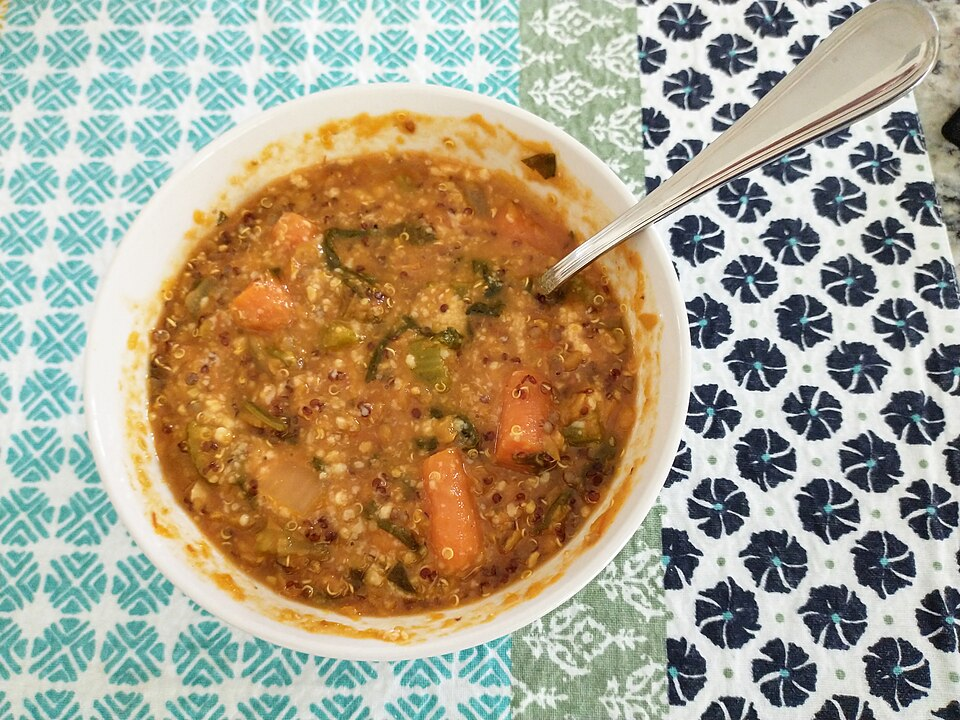

Lentils Soup
(Mexican Style)

Description
This lentil soup is a classic of Mexican home cooking. It’s hearty, nutritious, and budget-friendly, making it a perfect everyday meal. The combination of vegetables, herbs, and lentils creates a comforting dish with rich, savory flavors.
It comes together in about 30–40 minutes, making it ideal for both quick weeknight dinners and meal prep. You can also customize it easily with traditional toppings like fried plantain, chorizo, or fresh avocado for an extra layer of flavor.
Ingredients
- 1 Cup of dried lentils (green or dried), rinsed and clean
- 6 Cups of chicken or vegetable broth (or water + boullion)
- 2 tomatoes, chopped or blended
- Vegetable base
- ½ White onion, chopped
- 2 Carrots, diced
- 1 Celery stack, chopped
- 1-2 garlic cloves, minced
- Seasoning
- 1 Bay leaf
- Pinch of dried oregano
- Salt and pepper to taste
- Optional (trditional touch):
- 1 medium potato diced
- Fried plantain sliced
- Bacon or chorizo pieces
- Bombitos (small, crispy wheat crackers)
Preparation
- Heat 1 tablespoon of oil in a large pot over medium heat. Add onion, carrots, and celery. Cook for about 5 minutes until the onion becomes translucent.
- Stir in the garlic and cook for 1 more minute. Add the tomatoes and cook for 3–5 minutes until they release their juices.(Tip For a smoother texture, blend the tomatoes with a bit of onion and garlic before adding.)
- Add the rinsed lentils, broth (or water), bay leaf, and oregano. If using potatoes, add them now.
- Bring to a boil, then reduce heat to low. Cover partially and let simmer for 25–30 minutes, or until lentils are tender but not mushy.
- Taste and adjust salt and pepper to your liking. Add a handful of chopped fresh cilantro at the end for extra flavor
Serving Suggestions
- Add a squeeze of fresh lime juice before serving to enhance flavor
- Add a ½ tablespoon of olive oil
- Top with “Bombitos” for extra crunch
- Serve with sliced avocado
Inicio